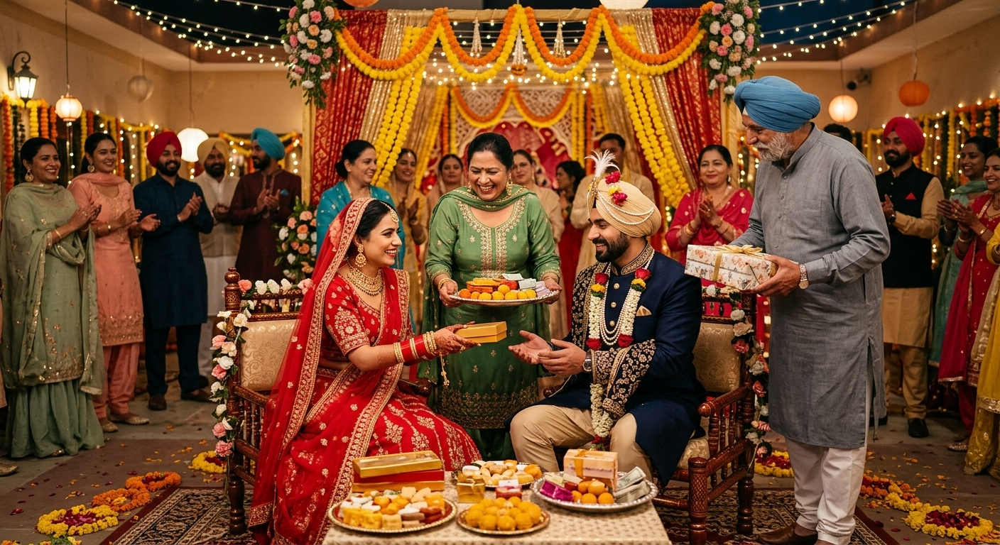
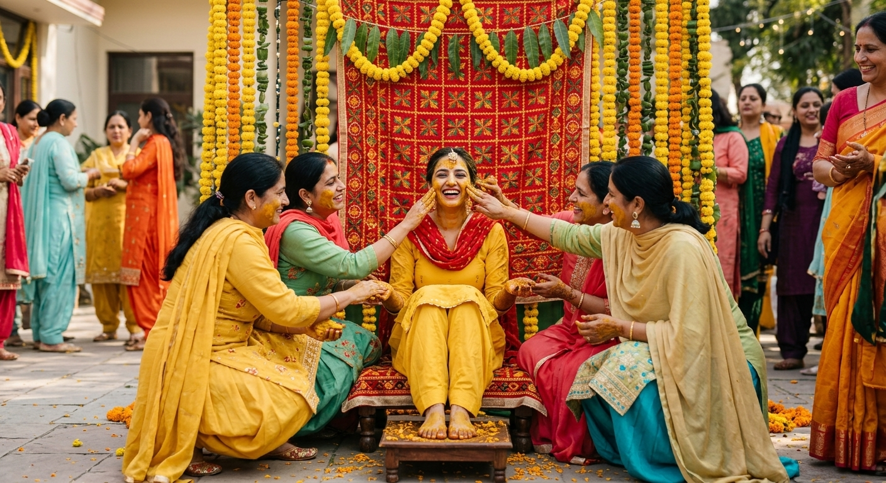
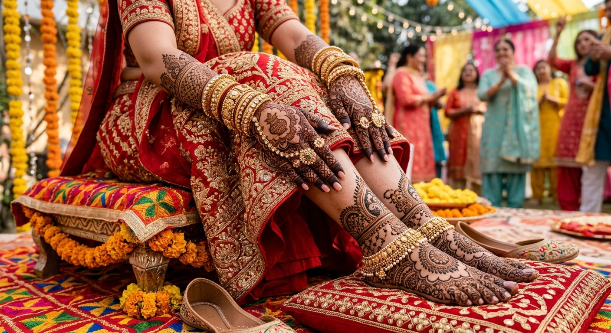
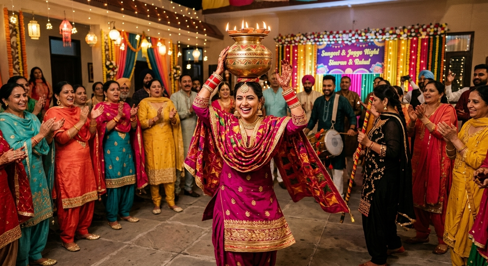
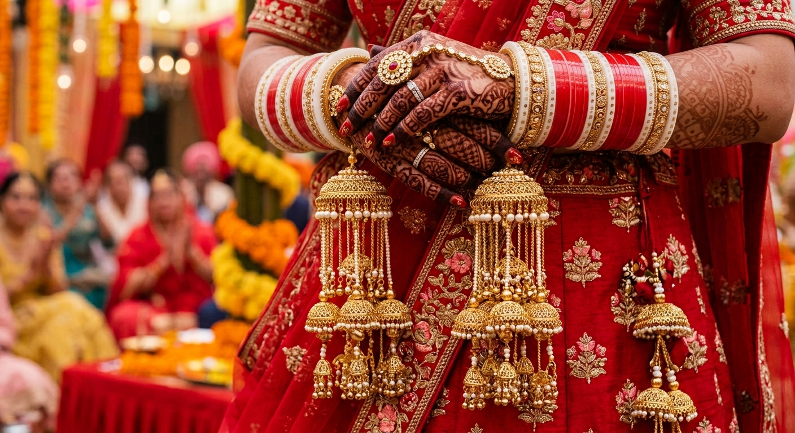

Traditional Punjabi Weddings 101
Pre-Wedding Festivities
By Sukhman Sandhu
Explore Pre-Wedding Rituals
Click any ritual image below to reveal its cultural meaning and significance:

1. Roka & Thaka
(Click image to reveal details)
The official announcement of the marriage alliance. Gifts, dried fruits, and sweets are exchanged between families to signify that the match is secured and both families have agreed to the union.

2. Maiyan & Haldi (Vatna)
(Click image to reveal details)
A purification ritual where a yellow paste made of turmeric, chickpea flour, and mustard oil (vatna) is applied to the bride and groom at their respective homes by family members to purify and give skin a radiant wedding glow.

3. Mehndi Night
(Click image to reveal details)
Intricate henna designs are applied to the bride's hands and feet. Folklore holds that a darker henna stain symbolizes deep love and a strong bond between the couple and her new family.

4. Sangeet & Jaggo Night
(Click image to reveal details)
A lively musical celebration featuring folk songs, Bhangra, and Giddha dances. During Jaggo, female relatives dance balancing decorated copper pots with lit lamps on their heads through the neighborhood to invite everyone to celebrate.

5. Choora & Kalire
(Click image to reveal details)
The bride's maternal uncles present her with ceremonial red and white bangles (choora). Golden umbrella-shaped charms (kalire) are tied to her wrists by sisters and friends for good fortune.